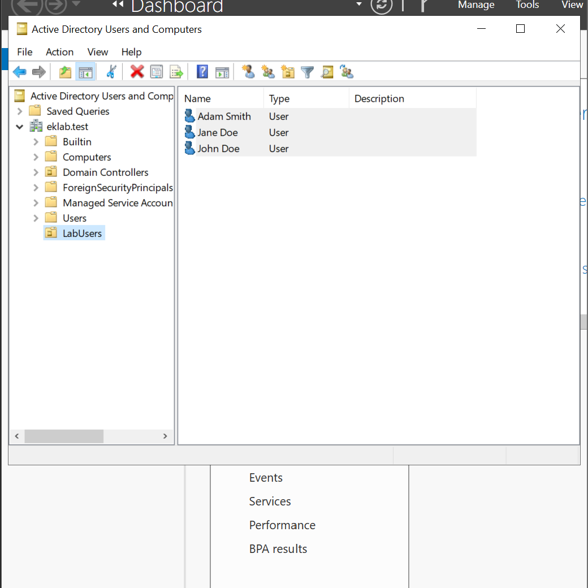
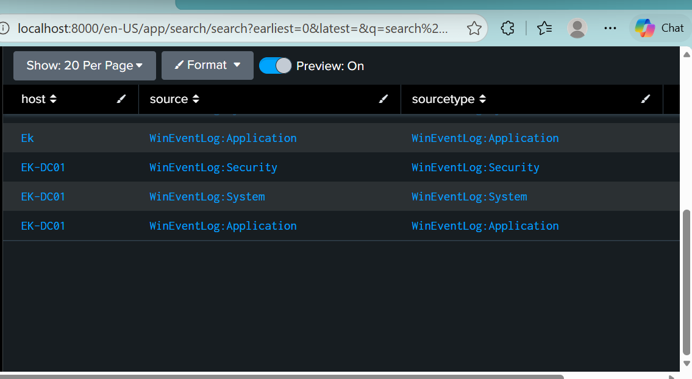
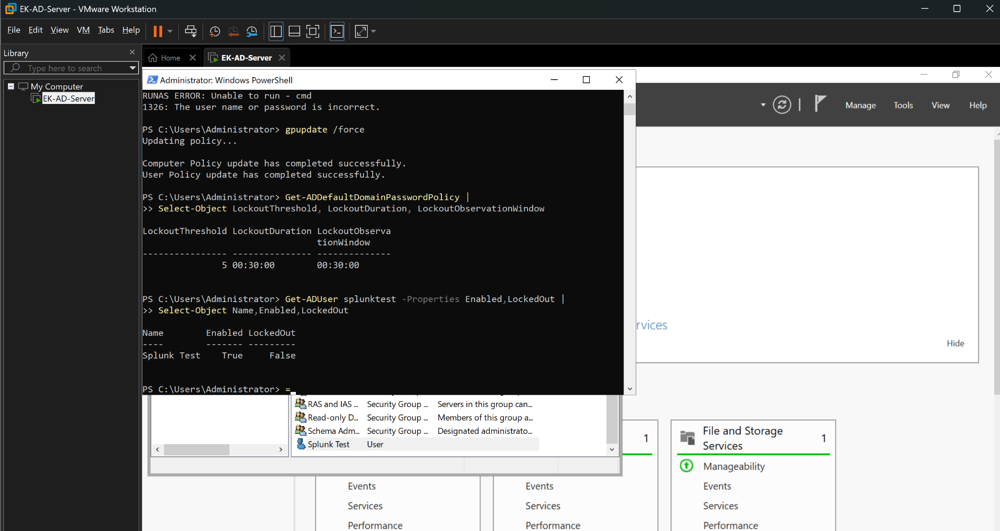
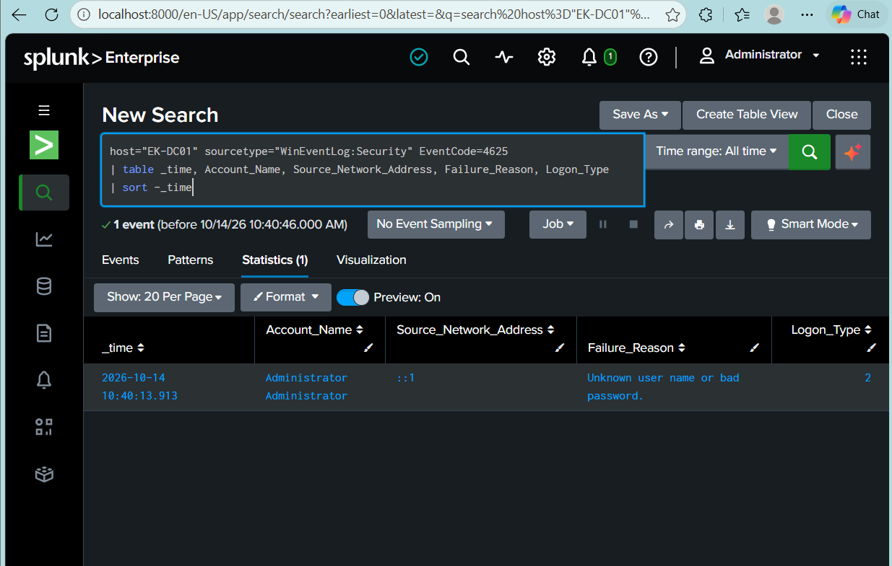
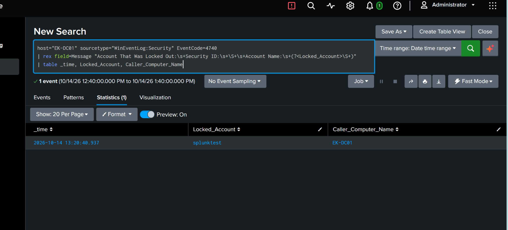
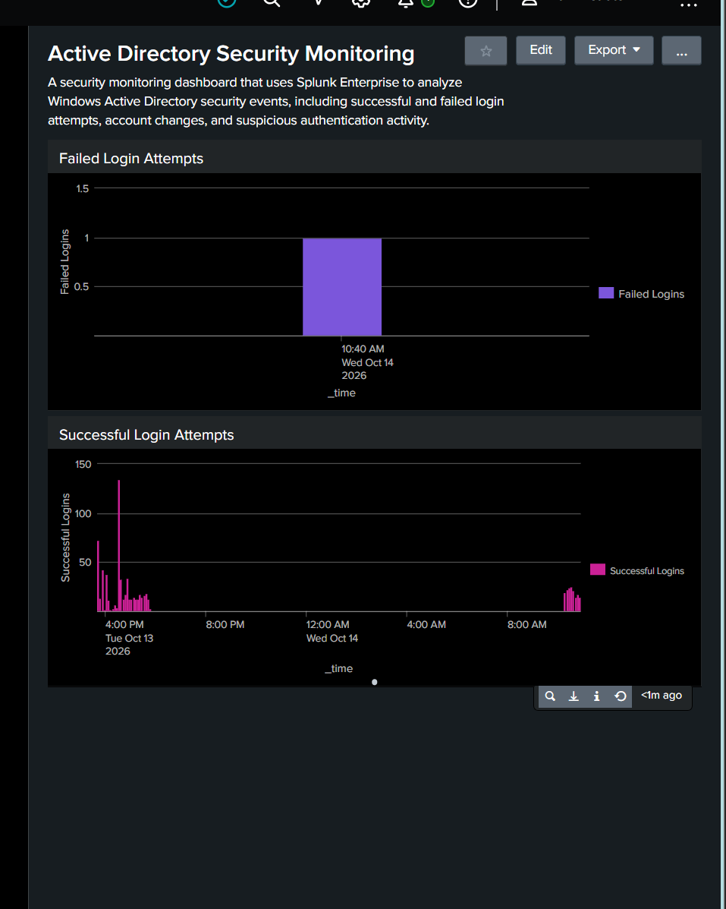
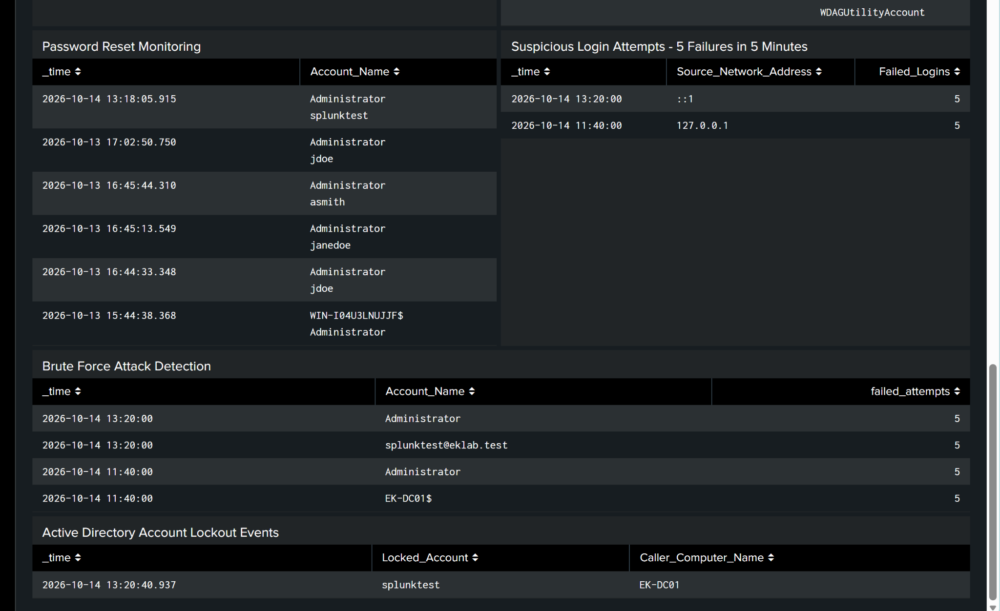
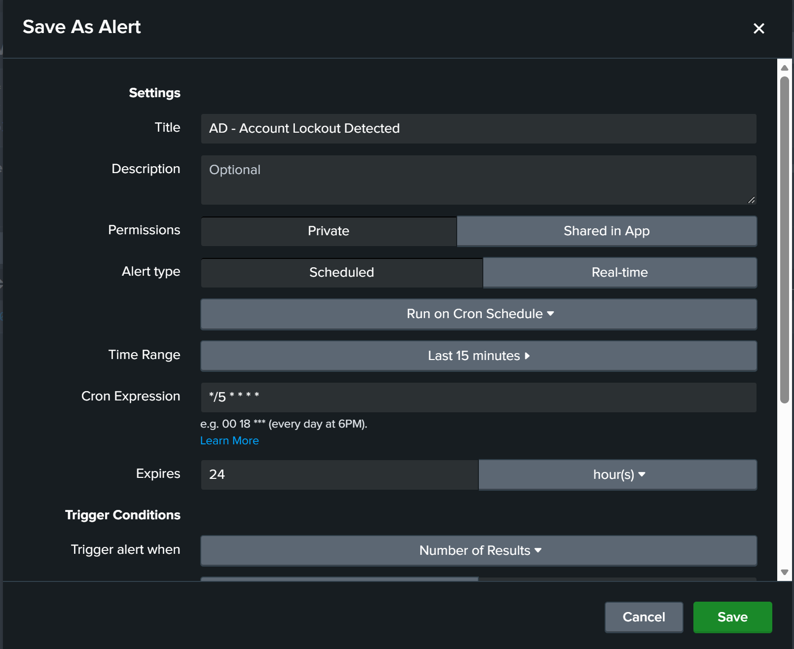
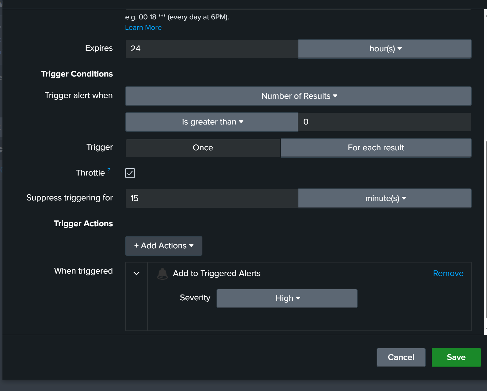

Active Directory Security Monitoring with Splunk
A Windows Active Directory lab with failed login detection, account lockout monitoring, security dashboards, and scheduled Splunk alerts.
- VMware Workstation
- Windows Server 2022
- Active Directory
- Splunk Enterprise
- SPL
- PowerShell
Goal
Build an Active Directory lab, collect Windows security events in Splunk, and test how failed authentication and account lockout activity appears in searches, dashboards, and scheduled alerts.
Lab environment
Built a Windows Server 2022 virtual machine in VMware Workstation, configured Active Directory Domain Services, and created a lab organizational unit and test accounts.
Installed Splunk Universal Forwarder and verified that Windows Application, Security, and System events were searchable in Splunk Enterprise.


Detection and account lockout policy
- Investigated failed logons using Event ID 4625, including account names, failure reasons, source addresses, and logon types.
- Created an SPL search for five or more failed logins per account group in a fixed five-minute bucket.
- Configured a lockout threshold of 5 invalid attempts, a 30-minute lockout duration, and a 30-minute reset window.
- Checked the test account's locked state and identified the resulting Event ID 4740 record with the locked account and caller computer.



Dashboard and scheduled alerts
Created the Active Directory Security Monitoring dashboard with login charts, account activity, suspicious-login summaries, and populated lockout results.
Configured failed-login and account lockout alerts to run every five minutes using */5 * * * *, with a result-count trigger and a 15-minute throttle. The lockout alert uses High severity in Splunk's Triggered Alerts. Both alerts have recorded trigger history.




Results and validation
The core lab is complete: Windows events were collected, failed-login searches returned results, a test account locked out, and the resulting lockout was visible in Splunk.
Further validation will confirm the final saved five-minute alert search window and throttle behavior. Earlier alert settings show a 15-minute lookback. Multivalued account fields also need normalization, and actual 30-minute account recovery was not timed.
Future improvements
- Refine account attribution and evaluate a sliding five-minute detection window.
- Validate alert search windows, suppression, and the password-reset panel's underlying query.
- Add Python event triage and rule-based severity classification.
- Generate CSV or JSON incident reports and add administrator notifications.
Python triage, automated reporting, and external notifications are planned additions.